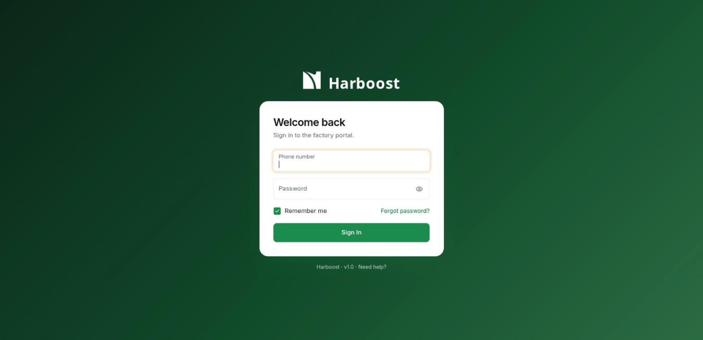

Click a button. Follow it all the way to the database.
This guide assumes you have never opened this project, you are new to TypeScript, and the word "API" still feels fuzzy. By the end you will know what happens, step by step, when someone clicks a button in the web portal.
Chapter 1Welcome: what this system does
Tea estates pick leaves every day. A factory buys them. Someone has to record what arrived, grade it, decide how much each estate is owed, and keep a trail of who changed what. This system does that.
Factory Officer
Records deliveries, enters the Super and Normal grade weights, and asks for corrections when a figure was wrong.
Factory Manager
Approves corrections and settlements. Anything that moves money passes through the Manager.
Administrator
Manages users, roles and settings. Can view grading and the audit trail, but does not grade.
Collection agents
Drive the routes and collect leaves from estates. They will use the mobile app.
Estate owners
Get a notice after their delivery has been graded.
Chapters 2 to 5 give you the map and the language. Chapters 6 and 7 are the heart of the guide: two real clicks followed from the screen to the database. Chapters 8 to 13 explain the pieces those stories touch. Chapters 14 and 15 get you running and changing code.
Chapter 2The big picture
The project is three programs and one database that talk to each other.
The one rule that explains everything
The portal runs in a stranger's browser, so it cannot be trusted. Anyone can open developer tools and send any request they like. That is why the API checks the login, the permissions and the data again on every request. Hiding a button in the portal is for convenience. The checks in the API are the security.
Words you will hear a lot
- Frontend is the portal: what you see and click.
- Backend is the API server: the rules and the gatekeeper.
- API is the list of questions the backend answers, such as "give me all collections".
- Endpoint is one question on that list, written as a verb and a path, for example
GET /collections. - JSON is the text format used for both questions and answers.
With Docker, an nginx container sits in front and adds a /api prefix. When you run things natively, the portal calls the backend directly with no prefix.
Chapter 3Folder tour
Everything lives under source-code/, with specs in docs/.
Every backend folder looks the same
Learn one module and you know them all. For example, backend/src/collections/ contains:
| File | Job |
|---|---|
| *.module.ts | Lists which controllers and services belong to this area. |
| *.controller.ts | Receives HTTP requests and hands them to a service. No business rules here. |
| *.service.ts | The rules and the work: checks, calculations, saving. |
| *.entity.ts | Describes one database table as a TypeScript class. |
| dto/ | Describes what a valid request body looks like. |
| *-map.ts | Turns database rows into the JSON shape the portal expects. |
| *.spec.ts | Automated tests. |
Chapter 4TypeScript in 10 minutes
TypeScript is JavaScript with labels that say what kind of thing each value is. The computer checks the labels before the program runs, so a typo like weigth becomes a red underline in your editor and not a bug on a customer's screen. The browser only runs JavaScript, so the tools strip the labels away when building.
1. Types on variables
const total: number = 42.5
const estateName: string = 'Pitiyagedara'
const isLocked: boolean = false
const weights: number[] = [12.5, 30]2. Union types: a short list of allowed values
The grade of tea is only ever Super or Normal. A union type says so, and the editor refuses anything else.
type Grade = 'Super' | 'Normal'
let g: Grade = 'Super' // fine
g = 'Premium' // error: not allowed3. Interfaces: the shape of an object
interface GradeLine {
grade: Grade
weightKg: number
note?: string // the ? means optional
}4. Functions, Promises and async/await
Talking to a server takes time. A Promise is a receipt for an answer that has not arrived yet. await pauses this function until the answer comes, while the rest of the page keeps working. A function that uses await is marked async.
async function loadCollections(): Promise<CollectionRecord[]> {
const list = await apiFetch<CollectionRecord[]>('/collections')
return list
}5. Generics: "this works for any type T"
In apiFetch<CollectionRecord[]> the part in angle brackets tells the function what shape the answer will have, so the caller gets correct hints afterwards. Read it as "fetch, and the result is a list of collection records".
6. Imports and exports
Each file is its own room. export opens a door, import walks through it. The portal also has a shortcut: @/ means admin/src/.
import { apiFetch } from '@/lib/api'
export const collectionsService = { list, get, setGradeLines }7. Decorators (backend only)
The @Something() lines above classes and methods are labels that the NestJS framework reads. They say "this class answers requests under /collections" or "this method answers GET".
@Controller('collections')
@UseGuards(JwtAuthGuard) // every route here needs a valid login
export class CollectionsController {
@Get() // GET /collections
findAll() { return this.collectionsService.findAll() }
}8. Classes and dependency injection
A service needs other services, for example the controller needs CollectionsService. You do not create it yourself. You list it in the constructor and NestJS hands you a ready one. This is called dependency injection, and it is also why tests can hand in a fake database.
constructor(private readonly collectionsService: CollectionsService) {}The official TypeScript Handbook covers all of this in depth. You only need chapters 1 to 4 to read this project.
Chapter 5React in 10 minutes
A React page is built from components. A component is a function that returns what should be on screen. When its data changes, React calls the function again and updates only the parts that changed. That re-run is called a render.
Props: inputs to a component
function GradeBadge({ grade }: { grade: Grade }) {
return <span className="badge">{grade}</span>
}
// used as: <GradeBadge grade="Super" />State: memory that survives renders
useState gives a component a value and a way to change it. Calling the setter triggers a render. In GradeDeliveryModal.tsx the dialog remembers which step it is on:
const [step, setStep] = useState<'enter' | 'review'>('enter')
// "Review" button:
<Button onClick={() => setStep('review')}>Review</Button>Click the button, setStep runs, React re-renders, and the dialog now shows the review screen. Nothing else in the page had to be told.
Hooks
Functions that start with use are hooks. They plug a component into React features: useState for memory, useNavigate for changing page, useAuth for "who is logged in", useQuery for loading data.
Passing events up: how a child talks to its parent
A child cannot reach into its parent. The parent passes it a function, and the child calls that function when something happens. In the project the page passes onSubmit and onClose to the modal.
<GradeDeliveryModal
record={record}
mode={gradingMode}
onClose={() => setGradingMode(null)}
onSubmit={(lines, reason) => gradeMutation.mutate({ lines, reason })}
/>"Signals" in this project are just functions passed down as props (data goes down, events come up). There is no hidden message bus. When you wonder how one part tells another something, look for a prop that is a function.
TanStack Query: loading and caching server data
Most pages do not call fetch by hand. They use TanStack Query, which fetches, remembers the answer in a cache under a key like ['collections'], and refetches when the cached copy is marked stale. Two tools matter:
useQueryreads data (a GET).useMutationchanges data (POST, PUT, DELETE). After it succeeds you callinvalidateQueriesto mark the related cached data stale, and the list on screen refreshes by itself.
See Important Defaults for what "stale" means and when refetching happens. New to React? The react.dev Learn tutorial is excellent.
Chapter 6Story 1: opening the collections list
A read is the simpler kind of click. You open /collections and a table of deliveries appears. Here is the whole journey.
- PortalThe page asks for its data
When
CollectionListPageappears, it runsuseQuerywith the key['collections']and a function to call.const { data: collections, isPending, isError, refetch } = useQuery({ queryKey: ['collections'], queryFn: collectionsService.list })While the answer is on its way,
isPendingis true and the page shows a spinner. If it fails,isErrorshows an error box with a Retry button wired torefetch.admin/src/features/collections/CollectionListPage.tsx - PortalThe service builds the request
A service file in the portal is a thin set of named functions, one per endpoint. Pages call
collectionsService.list()and never write URLs themselves. That way, a URL changes in one place.list: () => apiFetch<CollectionRecord[]>('/collections')apiFetchis the single doorway for all calls. It adds the base address, adds the login token to a header, turns errors into a friendlyApiError, and reads the JSON.admin/src/services/collections.ts · admin/src/lib/api.ts - APIThe guard checks the login
The controller class carries
@UseGuards(JwtAuthGuard). Before any method runs, the guard reads theAuthorization: Bearer ...header and verifies the token's signature and expiry. A bad or missing token ends the request here with a 401.backend/src/collections/collections.controller.ts · backend/src/auth/jwt-auth.guard.ts - APIThe service asks the database
@Get()routes the request tofindAll(), which calls the service. The service uses a TypeORM repository, which turns a method call into SQL.const records = await this.repo.find({ order: { collectionDate: 'DESC' } })You never write the
SELECT. The grade lines come along automatically because the entity marks themeager.backend/src/collections/collections.service.ts - DatabasePostgreSQL answers
Rows come back from the
tea_collection_recordsanddelivery_grade_linestables. - APIRows are reshaped for the portal
Database rows use names like
agent_assigned. The portal expectsAgent Assigned.toPublic()and the helpers incollection-map.tsdo that translation. They also work out values that are not stored, such as whether grading is open, locked or settled.backend/src/collections/collection-map.ts - APIJSON goes back
Nest turns the array into JSON and replies
200 OK. - PortalCache fills, table renders
TanStack Query stores the data under
['collections'].useQueryreturns it and React renders the table. Search and filters then run in the browser on that list withuseMemo, so typing in the search box makes no new request.
Open the browser developer tools (F12), go to the Network tab, and open the Collections page. Find the request named collections. Check the Headers for the Authorization line and the Response for the JSON. You have just watched steps 2 and 7.
Chapter 7Story 2: clicking "Grade Delivery"
A write changes data, so there are more safety steps. This is the click behind the grading feature: a Factory Officer enters the Super and Normal weights for a delivery.
Part A: inside the browser
- PortalThe button only appears for people allowed to use it
const canGradeEdit = can('grading', 'edit') const canGrade = canGradeEdit && record.status === 'Collected'can()comes fromuseAuth()and answers "does this user have at least edit level on the grading module?" Managers and Administrators get a view-only page, so they never see the button.admin/src/features/collections/CollectionDetailPage.tsx - PortalThe click opens the dialog
const [gradingMode, setGradingMode] = useState<GradingMode | null>(null) // button: onClick={() => setGradingMode('grade')}Changing
gradingModefromnullto'grade'causes a render, and the modal (which was hidden) now exists. The same modal also serves'edit'and'correction'. The page only changes themodeprop. - PortalThe dialog collects and checks input
GradeDeliveryModalkeeps one text box per grade inuseState, parses the numbers, adds up the total and compares it with the estate's weight. It also asks the API for context (GET /collections/:id/grading-context) to learn the tolerance and the estate's usual range. Problems like "this is far from the estate's figure" are warnings only. The Officer reviews and confirms in a second step.admin/src/features/collections/GradeDeliveryModal.tsx - PortalConfirm calls the parent's function
The modal calls
onSubmit(lines, reason). The page turned that intogradeMutation.mutate(...), auseMutation:mutationFn: async ({ lines, reason }) => { if (gradingMode === 'correction') await collectionsService.requestCorrection(id!, lines, reason ?? '') else await collectionsService.setGradeLines(id!, lines, reason) }, onSuccess: () => { toast('Saved'); setGradingMode(null); refresh() }, onError: fail('Could not save the grading'),While the request runs,
gradeMutation.isPendingis true, which the modal uses to disable its button, so a double click cannot save twice. - PortalThe service sends the request
setGradeLines: (id, lines, reason) => apiFetch<CollectionRecord>(`/collections/${id}/grade-lines`, { method: 'PUT', body: JSON.stringify({ lines, ...(reason ? { reason } : {}) }), })The wire carries
PUT /collections/DSP-20261012-1/grade-lineswith a JSON body and the Bearer token.admin/src/services/collections.ts
Part B: inside the API
A NestJS request goes through a fixed sequence. Knowing it tells you where to look when something is rejected.
This follows the order in the official NestJS request lifecycle: middleware, guards, interceptors, pipes, then your handler. If anything throws an error on the way, an exception filter turns it into an HTTP error reply.
- APIThe guard, then the validation pipe
The class-level
JwtAuthGuardaccepts the token. Then the globalValidationPipe(set inmain.ts) checks the body against a DTO, a class whose decorators describe a valid request. Unknown fields are removed.export class GradeLineDto { @IsIn(['Super', 'Normal']) grade: 'Super' | 'Normal' @IsNumber({ maxDecimalPlaces: 2 }) @IsPositive() weightKg: number } export class SetGradeLinesDto { @IsArray() @ArrayMinSize(1) @ArrayMaxSize(10) @ValidateNested({ each: true }) @Type(() => GradeLineDto) lines: GradeLineDto[] }A body of
-5kg or the grade "Premium" never reaches your code. The API replies 400 with a message that names the problem.backend/src/collections/dto/set-grade-lines.dto.ts · backend/src/main.ts - APIThe controller hands over
@Put(':id/grade-lines') async setGradeLines(@Param('id') id: string, @Body() dto: SetGradeLinesDto, @Req() req: AuthedRequest) { await this.grading.setGradeLines(id, dto, await this.resolveActor(req)) return this.findOne(id) }Notice how little is here.
resolveActorturns the token into "who is this person, and what is their role". The controller then calls the service and returns the fresh record.backend/src/collections/collections.controller.ts - APIThe service enforces the rules
GradingService.setGradeLinesdoes the thinking, in this order:- Permission. Reads the role's level from the
role_permissionstable and refuses with 403 if it is too low. - State. Loads the delivery and works out its grading state. A delivery that was never graded gets its first grading. One still inside its correction window can be edited, but a reason is required. A locked or settled one is refused with 409.
- Transaction. The saves below all happen in one database transaction. If any of them fails, none are kept.
await this.access.require(actor.role, 'edit', 'grade deliveries', 'grading')backend/src/collections/grading.service.ts · backend/src/dispatch/dispatch-access.service.ts - Permission. Reads the role's level from the
- DatabaseOne transaction, several rows
- the delivery's grade lines are saved and the total is recomputed;
- a new row is appended to
delivery_grade_revisions, so the history of changes is never lost; - a held owner notification is queued in
grading_notifications; - a weight mismatch complaint is opened, updated or resolved.
WhyA transaction means all or nothing. Without it, a crash after saving the lines but before saving the revision would leave a delivery with grades and no history.
- APIThe audit trail
After the transaction,
AuditService.recordwrites who did what to which record. Every change in this system leaves one of these lines. - APIThe response
The controller returns the updated record as JSON, with extra fields such as the revision count and the notification status.
Part C: back in the browser
- PortalMark old data stale, so the screen refreshes
void queryClient.invalidateQueries({ queryKey: ['collection', id] }) void queryClient.invalidateQueries({ queryKey: ['collections'] }) void queryClient.invalidateQueries({ queryKey: ['estates'] })onSuccesscallsrefresh(). It does not copy the answer by hand into several screens. It marks every cache entry that could now be wrong as stale, and TanStack Query refetches those that are on screen. The detail page, the list and the estate totals all update with no extra wiring. - PortalThe user sees the result
A toast says "Saved", the modal closes (
setGradingMode(null)), and the detail page shows the new grade lines and the history panel.
The permission is checked twice: once in the portal with can() to decide whether to show the button, and once in the API with access.require to decide whether to allow the change. The first is polite. The second is the one that counts.
Chapter 8Logging in and staying logged in

- PortalThe form calls
login(phone, password)LoginPagecallsloginfromAuthContext, which sendsPOST /auth/login. - APIThe API checks the password
AuthService.loginfinds the user by phone, compares the password to its stored hash withbcrypt(passwords are never stored in plain text), rejects suspended accounts, then signs a token. - APIA token comes back
The reply contains an
accessTokenand the user's profile with their permissions. - PortalThe token is saved and attached
The portal keeps the token in
localStorageunderharboost.token. From then onapiFetchaddsAuthorization: Bearer <token>to every request. When you reload the page,AuthContextfinds the token and callsGET /auth/meto restore the session.
What is inside a JWT?
A JSON Web Token has three parts separated by dots. Anyone can read the first two. Only the server can produce a valid third, because it needs the secret key.
If someone edits the payload to claim a higher role, the signature no longer matches and the guard rejects the token. The token expires after JWT_EXPIRES_IN (7 days locally). Any 401 reply makes the portal log the user out, using a handler registered in AuthContext.
Mobile agents get a different token from POST /auth/agent/login, checked by a separate guard. The portal's guard refuses agent tokens, and the agent guard refuses portal tokens.
Chapter 9Who can do what
Permissions are data, not code. A table named role_permissions says, for each role and module, how much that role may do. The levels climb like stairs, and each level includes the ones below it.
The same table is read by the API in DispatchAccessService.require(role, needed, what, module), which throws a 403 such as "Your role may not grade deliveries."
The sidebar uses it too. In Sidebar.tsx each menu item carries a module name, and items the user cannot view are filtered out. A direct URL to an admin page is blocked by AdminGuard.
The grading modules
| Module key | Who | Meaning |
|---|---|---|
| grading | Officer edit; Manager and Admin view | Grade a delivery, edit while open, request a correction. |
| gradingApproval | Manager approve | Approve or reject a correction, including one that changes a settled payment. |
Defaults for the portal live in admin/src/context/permissions.ts. The real values come from the database table and can be changed on the Users & Roles page.
Chapter 10The database
PostgreSQL stores everything in tables. A table is a spreadsheet with strict columns. A row is one record, and rows in different tables point to each other with ids.
Three kinds of SQL file
database/init.sqlcreates the whole schema. It runs when a database is created.database/migrations/*.sqlare small, repeatable patches for a database that already exists. If you add a column, you add a migration and also updateinit.sql.backend/src/seed.tsfills a database with demo users, estates and deliveries. Run it on your local database only.
TypeORM is set to synchronize: false. Changing an entity class does not change the database. If you forget the SQL migration, the code will fail with "column does not exist".
Entities: a class per table
@Entity('tea_collection_records')
export class CollectionRecordEntity {
@PrimaryColumn() id: string
@Column({ name: 'collection_date' }) collectionDate: string
@OneToMany(() => DeliveryGradeLineEntity, (l) => l.record, { eager: true, cascade: true })
gradeLines: DeliveryGradeLineEntity[]
}The table uses snake_case column names and the class uses camelCase. The name: option connects them.
How grading tables relate
Some values are derived and not stored. The "state" of a delivery (open, locked, settled) is worked out on every read by gradingState() from the timestamps and the settlement link. Fewer stored copies means fewer chances to disagree.
See it with your own eyes
Install DBeaver, connect to localhost:5432, database tea_db, user tea_user. Open tea_collection_records and look at the rows, then change a delivery in the portal and refresh DBeaver.
Chapter 11Background jobs and notifications
Not everything happens during a click. After grading, the estate owner should get a notice, but only once the correction window has passed, so owners are never told a figure that is about to change.
This pattern is called an outbox. The "to send" row is saved together with the data, so it can never be lost, and a separate worker does the sending. Details that make it safe:
- A
dedupe_keysuch asgraded:DSP-...is unique, so the same notice is never created or sent twice. - A worker first claims a row by changing
queuedtosending. Only one worker can win that update. - A row stuck in
sendingfor more than 5 minutes is put back in the queue. - If grading is later corrected after the notice went out, a new "Correction" notice is sent showing old and new values. The first notice stays on record.
The scheduler lives in grading-notification.tasks.ts using @Cron('* * * * *'), and the logic lives in grading-notification.service.ts. The two are kept apart so the tests can run the logic without the scheduler.
Chapter 12When things go wrong
HTTP replies carry a number. The first digit tells you whose problem it is. Learn these six and you can read most failures.
| Status | Meaning | Usual cause here |
|---|---|---|
| 200 / 201 | It worked. | Normal reply. |
| 400 | Bad request. | The body failed DTO validation, or a required reason was missing. |
| 401 | Not logged in. | Missing, wrong or expired token. The portal logs you out. |
| 403 | Logged in, not allowed. | Your role's level is too low, "Your role may not ...". |
| 404 | Not found. | No record with that id. |
| 409 | Conflict with the current state. | Trying to edit a locked delivery, or a second pending correction. |
| 500 | Server bug. | An unhandled error, often a missing column. Check the backend terminal. |
In the portal, apiFetch turns a failed reply into ApiError(status, message) using the message field Nest sends. Pages then show toast(err.message, 'danger') or an ErrorState with a Retry button. If the server cannot be reached at all, the status is 0 and the message names the address that failed. The MDN status code reference lists the rest.
Start at the symptom. Red toast: read its message, it usually comes straight from the API. Blank page: check the browser console. Nothing changes after a click: check the Network tab for the request and its status. 500: read the backend terminal, which prints the stack trace.
Chapter 13Tests
Tests are small programs that call your code and check the answer. They let you change things without fear.
Backend: Jest
Files ending in .spec.ts next to the code. Run npm test inside backend/.
Portal: Vitest
Files ending in .test.ts. Run npm test inside admin/.
The backend tests do not need a real database. A FakeRepo in collections/testing/fake-repo.ts imitates a TypeORM repository in memory, and NestJS dependency injection lets a test hand it to the service in place of the real one.
it('locks once the window closes: direct edit is refused', async () => {
setClock(minutes(T0, 31)) // pretend 31 minutes have passed
expect(gradingState(record())).toBe('locked')
await expect(
h.grading.setGradeLines(ID, { lines: LINES, reason: 'late' }, officer),
).rejects.toThrow(/locked/)
expect(h.revisions.rows).toHaveLength(1) // nothing new was written
})This is a real test from grading.service.spec.ts. setClock moves a fake clock, h is a harness that wires the service to in-memory fake repositories, and officer is a ready-made user.
A good test names a rule in plain words. When you add a rule, add a test for the case where it must refuse.
In backend/ run npx jest grading to run just the grading tests. Then break a rule on purpose in grading.service.ts and watch a test fail. Undo the change afterwards.
Chapter 14Run it on your machine
- Install Node.js, PostgreSQL 17 and DBeaver (optional, for looking at tables).
- Create the local database (user
tea_user, databasetea_db), then loaddatabase/init.sqland the files indatabase/migrations/. - Create
backend/.envwith these keys:DATABASE_URL,JWT_SECRET,JWT_EXPIRES_IN,REDIS_URL,PORT. Ask a teammate for the values. Never commit this file. - Start the API:
cd source-code/backend && npm install && npm run start:dev - Fill demo data (local database only):
npm run seed - Point the portal at the API: in
admin/.env.localsetVITE_API_URL=http://localhost:3000(use the same port as your backendPORT). - Start the portal:
cd source-code/admin && npm install && npm run devand openhttp://localhost:5173.
Do not run npm run seed while your DATABASE_URL points at a shared cloud database. Check the value before you run it. Read the demo credentials in seed.ts; they are for local use only.
Scripts you will use
| Where | Command | What it does |
|---|---|---|
| admin | npm run dev | Portal with live reload on port 5173. |
| admin | npm test / npm run build | Vitest, and type-check plus production build. |
| backend | npm run start:dev | API that restarts when you save a file. |
| backend | npm test / npm run build | Jest, and compile to dist/. |
| backend | npm run seed | Demo data, local only. |
Chapter 15Your first change: add one field, end to end
Say the factory wants a "driver note" on every delivery. Every layer you met in this guide takes part. Do the steps in this order and build or test after each.
- DatabaseAdd the column
Create a migration file in
database/migrations/that addsdriver_note texttotea_collection_records, written so it can run twice safely (ADD COLUMN IF NOT EXISTS). Mirror the same line ininit.sql. - APIEntity
Add
@Column({ name: 'driver_note', type: 'text', nullable: true }) driverNote: string | nullto the entity. - APIMap, DTO and service
Add the field to the public type and
toPublic()incollection-map.ts. If users can set it, add it to the DTO with a validation decorator, and handle it in the service. If the change is a mutation, call the audit service. - APITest
Add a spec case: field saved, field returned, invalid value rejected. Run
npx jest collections. - PortalType and service
Add
driverNoteto theCollectionRecordtype infeatures/collections/types.ts. The compiler now shows every place that must handle it. - PortalThe screen
Show the value on
CollectionDetailPage. If editable, add an input, send it through the mutation, and rely oninvalidateQueriesto refresh. - PortalCheck everything
Run
npm run buildandnpm testin bothadminandbackend, then click through it in the browser.
Work in small steps, commit each one that works, and write the reason for a change in the commit message. When a rule is unclear, ask before guessing. Rules about money are the ones to ask about.
Known rough edges
- The mobile app does not call the API yet. Its screens use local sample data.
- All portal pages load up front. There is no lazy loading.
VITE_USE_MOCK_APIexists in Docker settings but no code reads it. Every module that matters talks to the real API.- One place hard-codes a role check (
assertCanWriteincollections.service.ts) while the rest reads the permissions table. Treat the table as the rule.
Chapter 16Glossary and where to learn more
- API / endpoint
- The set of questions the backend answers. One endpoint is one verb and path, like
PUT /collections/:id/grade-lines. - HTTP verb
- GET reads, POST creates or triggers an action, PUT replaces or updates, DELETE removes.
- JSON
- A text format for data made of objects, lists, strings, numbers and booleans.
- JWT
- A signed token that proves who you are without the server looking you up on every request.
- Guard
- NestJS code that allows or blocks a request before the handler runs.
- Pipe / DTO
- A pipe checks or converts input. A DTO is the class that describes a valid request body.
- Controller / service
- The controller receives requests. The service holds the rules.
- Entity / ORM
- An entity is a class mapped to a table. An ORM, here TypeORM, turns method calls into SQL.
- Transaction
- A group of database changes that either all succeed or all roll back.
- Migration
- A SQL file that changes an existing database's structure.
- Component / props / state
- A piece of the screen, the inputs it receives, and the memory it keeps.
- Hook
- A function starting with
usethat plugs a component into React features. - Query cache
- TanStack Query's memory of server answers, organised by key. Invalidating a key marks it stale so it refetches.
- Outbox
- A table of "to send" work, saved together with the data and processed by a separate worker.
- Cron
- A schedule, such as "every minute", for background work.
- Audit log
- The permanent record of who changed what and when.
- Idempotent
- Doing it twice has the same effect as doing it once. Needed so a retry never sends two notices.
Official documentation
- TypeScript Handbook
- React: Learn
- TanStack Query for React
- NestJS: First steps and Request lifecycle
- TypeORM
- PostgreSQL tutorial
- MDN: HTTP status codes
- jwt.io: Introduction
Inside this repository
Claude.mdat the repo root: project notes and conventions.docs/specs/Collection-Grading-Corrections-Addendum.md: the full grading and correction rules.docs/specs/Collection-Agent-Dispatch-Addendum.md: the dispatch rules.source-code/admin/AGENTS.md: portal conventions.